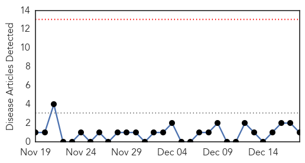

Meningitis
30-Day Web Trend
0 alerts, 0 warnings

30-Day Twitter Trend
0 alerts, 0 warnings

Article Locations

Article Confidences

Top Articles:
Top Tweets:
-
No tweets found for Dec 18, 2014
Influenza
30-Day Web Trend
1 alerts, 0 warnings

30-Day Twitter Trend
2 alerts, 0 warnings

Article Locations

Article Confidences

Top Articles:
- 1.000
- Visits to ER, hospital admissions skyrocketing
- 1.000
- Chikungunya kills six
- 1.000
- Flu surge forces Beaumont to set visitor restrictions
- 0.999
- Flu cases up in La Salle County
- 0.997
- Early flu season hits school attendance
- 0.997
- Many flu infections aren't good match for vaccine
- 0.996
- Rise in flu cases reported statewide
- 0.996
- Many Flu Infections Aren't Good Match for Vaccine
- 0.996
- Many Flu Infections Aren't Good Match for Vaccine
- 0.994
- Widespread flu claims another life, hitting schools
- 0.994
- This year's flu vaccine partly inefficient due to mutated viruses
- 0.992
- North Carolina health officials report another flu death this season
- 0.991
- Experts predict rough flu season
- 0.991
- Influenza cases reported in Westby schools
- 0.986
- WBOC-TV 16, Delmarvas News Leader, FOX 21 -
- 0.986
- Flu Activity Expected to Increase
- 0.985
- Duck Died in Sukhna Lake Tests Positive for H5N1
- 0.984
- Flu season looks like it could be a doozy
- 0.976
- Is your flu shot really protecting you from getting sick?
- 0.971
- Flu outbreak worst since 2009
- 0.971
- Flu Season Hits Georgia
- 0.968
- High-dose flu vaccine superior for frail elderly living in long-term care facilities
- 0.967
- Flu cases increasing in Delaware
- 0.965
- Health Unit warns flu season to be worse and more deadly this year
- 0.961
- Kalamazoo County health department warns of norovirus, influenza outbreaks
- 0.942
- Hospitals restrict vistors due to increase in influenza cases
- 0.939
- Pharmacists Provide Important Information and Care During Cold and Flu Season
- 0.919
- Punjab monitoring Chandigarh bird flu situation
- 0.912
- Norwalk Health Department urges residents to get vaccinated
- 0.906
- Punjab monitoring Chandigarh bird flu situation
- 0.880
- Department of Agriculture - Bonney Lake-Sumner Courier-Herald
- 0.879
- Newburg R-II Schools closing due to flu
- 0.855
- NewsChannel 10 / Amarillo News, Weather, Sports
- 0.850
- Flu season expected to be bad this year
- 0.799
- Illness closes Alden-Conger Schools for 2 days
- 0.791
- Alden-Conger too sick to go to school
- 0.774
- Vaxigrip (Inactivated Influenza Vaccine) Drug
- 0.770
- UPDATE: 11th farm hit with Avian flu, outbreak that started in Chilliwack enters U.S.
- 0.769
- Avian Flu flies into Washington State
- 0.695
- Flu hits Freeport School District
- 0.642
- Domesticated geese culled in Chandigarh
- 0.585
- Quebec City hospitals ban visitors
Top Tweets:
-
No tweets found for Dec 18, 2014